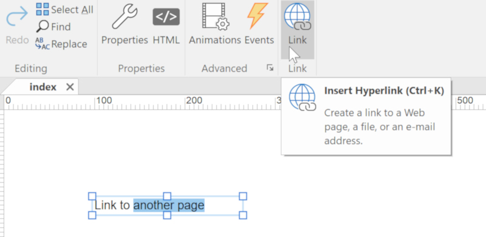
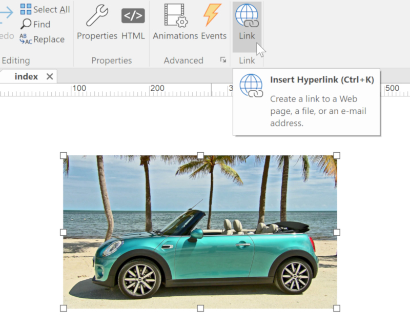
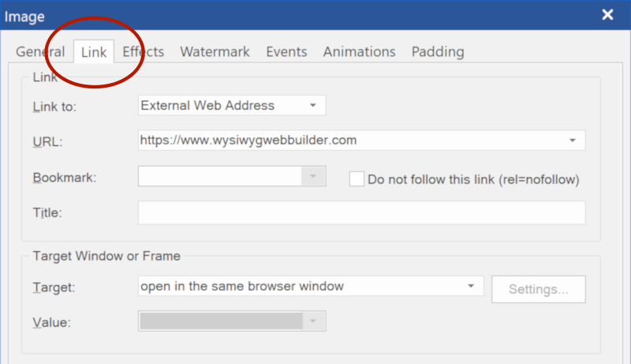
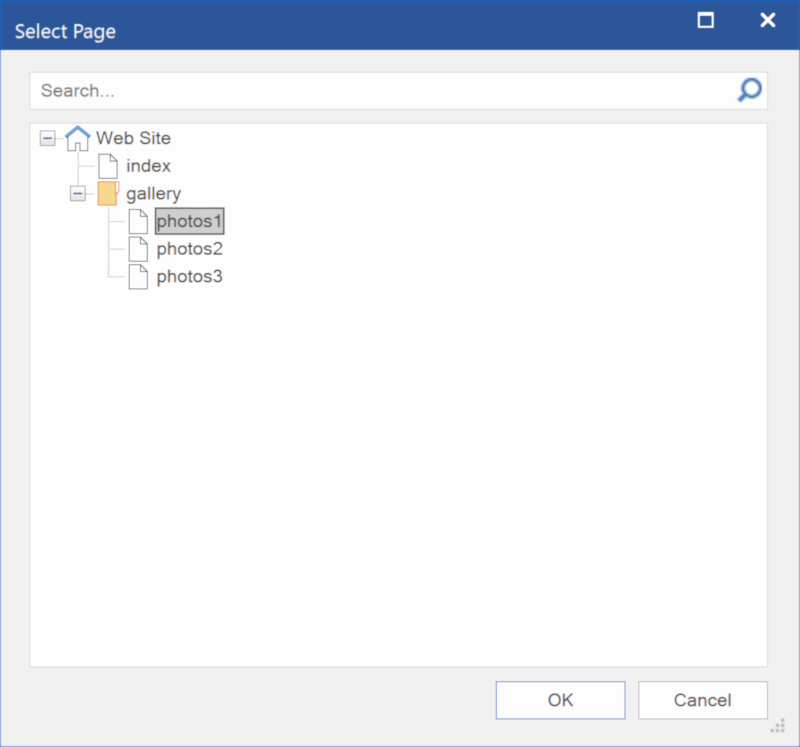
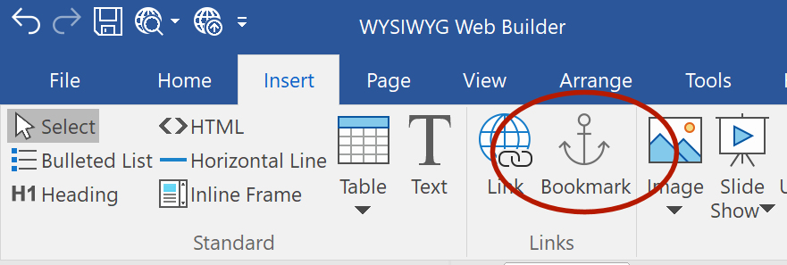
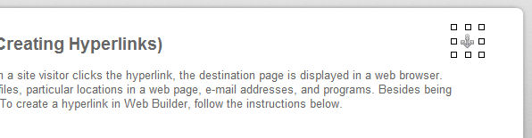
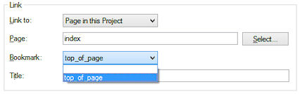

Linking your pages together (Creating Hyperlinks)
A hyperlink links one web page to another. When a site visitor clicks the hyperlink, the destination page is displayed in a web browser. Hyperlinks can also link to pictures, multimedia files, particular locations in a web page, e-mail addresses, and programs. Besides being represented as text, hyperlinks can be pictures. To create a hyperlink in Web Builder, follow the instructions below.
A hyperlink links one web page to another. When a site visitor clicks the hyperlink, the destination page is displayed in a web browser. Hyperlinks can also link to pictures, multimedia files, particular locations in a web page, e-mail addresses, and programs. Besides being represented as text, hyperlinks can be pictures. To create a hyperlink in Web Builder, follow the instructions below.
Highlight the text you want to link and select Insert->Link from the menu bar, click the link button on the toolbar or press CTRL+K on your keyboard. This will display the Insert Hyperlink window.
Linking images, shapes and other objects
Linking images, shapes and other objects


Link to a file (ZIP, PDF etc)
This option can be useful if you want to create a download link for a ZIP or PDF file.
Set the Link To option to File. Browse for the file you wish to create a link for. WYSIWYG Web Builder will automatically upload the local file to your website, when you publish your page.
Note: When linking to large files, it may take a while a while before the file is transferred to your website!
Also note that you cannot open file in a popup window. Popups only work for HTML files.
Alternatively you can use the method described in the FAQ:
How to create a download for your websites visitors?
Link to an email address
Select Email Address from the Link To dropdown list. The URL box will automatically be updated with the mailto: prefix. Now enter the destination email address like this:
mailto: webmaster@yourdomain.com
You can also include a subject for the email like this: mailto:webmaster@yourdomain.com?subject=Website Feedback
Target Window or Frame
Open in the same browser window, this option will set the target of the link to _self
Open in a new browser window, this option will set the target of the link to _blank
Open in another window or frame, this option lets you specify a custom target.
Examples:
_parent, open the link in the parent frame
_top, loads the linked page in the topmost frame
iframe1, specify the name of an inline frame, to open the linked page in an inline frame.
Open in a popup window, this option will open the linked page in a (javascript) popup window. Click 'Settings' to specify the properties of the popup window.
Bookmarks (Jump to another part of the page)
Text and images can be set as bookmarks (also called "anchors") that can be linked to within a page. For example, if a page has several new items, the news titles for each item can be set as bookmarks and a row of links can be added to the top of the page that will each skip down to those bookmarked sections. This method of using bookmarks allows visitors to your site to quickly access information by not having to scroll down the page to view the information they want.
Step 1
You can create a Bookmark by using the Bookmark tool from the Insert menu.
This option can be useful if you want to create a download link for a ZIP or PDF file.
Set the Link To option to File. Browse for the file you wish to create a link for. WYSIWYG Web Builder will automatically upload the local file to your website, when you publish your page.
Note: When linking to large files, it may take a while a while before the file is transferred to your website!
Also note that you cannot open file in a popup window. Popups only work for HTML files.
Alternatively you can use the method described in the FAQ:
How to create a download for your websites visitors?
Link to an email address
Select Email Address from the Link To dropdown list. The URL box will automatically be updated with the mailto: prefix. Now enter the destination email address like this:
mailto: webmaster@yourdomain.com
You can also include a subject for the email like this: mailto:webmaster@yourdomain.com?subject=Website Feedback
Target Window or Frame
Open in the same browser window, this option will set the target of the link to _self
Open in a new browser window, this option will set the target of the link to _blank
Open in another window or frame, this option lets you specify a custom target.
Examples:
_parent, open the link in the parent frame
_top, loads the linked page in the topmost frame
iframe1, specify the name of an inline frame, to open the linked page in an inline frame.
Open in a popup window, this option will open the linked page in a (javascript) popup window. Click 'Settings' to specify the properties of the popup window.
Bookmarks (Jump to another part of the page)
Text and images can be set as bookmarks (also called "anchors") that can be linked to within a page. For example, if a page has several new items, the news titles for each item can be set as bookmarks and a row of links can be added to the top of the page that will each skip down to those bookmarked sections. This method of using bookmarks allows visitors to your site to quickly access information by not having to scroll down the page to view the information they want.
Step 1
You can create a Bookmark by using the Bookmark tool from the Insert menu.
Select the image, shape or rollover image you want to link and select Insert->Link from the menu bar, click the link button on the toolbar or press CTRL+K on your keyboard. Note that there is also a Link tab in the images properties window.

Link to a page on another web site
Set the Link To option to Web Site. Enter the full URL (Internet Address) of the destination page in the URL box. External URLs MUST begin with "http://" or they will not work.
For example, to link to the Pablo Software Solutions home page, type "http://www.pablosoftwaresolutions.com/" instead of "www.pablosoftwaresolutions.com".
Link to a page on your own web site
Set the Link To option to Internal Web Page. Click 'Select' to choose a page. This will list all pages which are part of the current web site project. Select one of the pages and a relative link will automatically be created (eg ./products.html).
Set the Link To option to Web Site. Enter the full URL (Internet Address) of the destination page in the URL box. External URLs MUST begin with "http://" or they will not work.
For example, to link to the Pablo Software Solutions home page, type "http://www.pablosoftwaresolutions.com/" instead of "www.pablosoftwaresolutions.com".
Link to a page on your own web site
Set the Link To option to Internal Web Page. Click 'Select' to choose a page. This will list all pages which are part of the current web site project. Select one of the pages and a relative link will automatically be created (eg ./products.html).

Bookmark example: Click here to jump to the top of the page
Bookmarks also support smooth scrolling and events. See these related tutorials to learn more:
How to reveal objects on scroll with bookmark events?
How to use Affix and ScrollSpy?
Bookmarks also support smooth scrolling and events. See these related tutorials to learn more:
How to reveal objects on scroll with bookmark events?
How to use Affix and ScrollSpy?
Step 2
Move the bookmark icon to the position where you want the page to jump to if the user clicks the link. In this case lets jump to the top of the page.
Move the bookmark icon to the position where you want the page to jump to if the user clicks the link. In this case lets jump to the top of the page.

Step 4
Once you have placed the bookmark icon on your page, it can be selected from the Bookmark dropdown list.
Once you have placed the bookmark icon on your page, it can be selected from the Bookmark dropdown list.

Step 3
Make sure you give the bookmark a useful name (ID).
You can set the ID of the bookmark in the Property Inspector, Object Manager (context menu) or by clicking the ID in the statusbar when the bookmark is selected.
Make sure you give the bookmark a useful name (ID).
You can set the ID of the bookmark in the Property Inspector, Object Manager (context menu) or by clicking the ID in the statusbar when the bookmark is selected.

Related tutorials
Change the color or style of a hyperlink
Adding a Navigation Bar to your web site
Adding a Menu Bar to your web site
Change the color or style of a hyperlink
Adding a Navigation Bar to your web site
Adding a Menu Bar to your web site
What to do when links do not work?
• Did you use a valid URL? A valid link starts with 'http://' or 'https://'
So www.wysiwygwebbuilder.com is not correct, it should be https://www.wysiwygwebbuilder.tk
• If internal links do not work then make sure all pages has been published. In preview mode enable 'Preview entire website'.
• If the link cannot be clicked in the browser then make sure that no other objects overlap the link.
Links should always be 'on top'. You can use the Arrange Tools (move to front) or Object Manager to change the order (z-index) of objects.
• Maybe you have added events to the object?
For example, the 'onclick' event will overwrite the default behavior of the click action, so in that case the browser will not trigger the link.
Related FAQ topic:
https://www.wysiwygforum.tk/viewtopic.php?f=10&t=37833
• Did you use a valid URL? A valid link starts with 'http://' or 'https://'
So www.wysiwygwebbuilder.com is not correct, it should be https://www.wysiwygwebbuilder.tk
• If internal links do not work then make sure all pages has been published. In preview mode enable 'Preview entire website'.
• If the link cannot be clicked in the browser then make sure that no other objects overlap the link.
Links should always be 'on top'. You can use the Arrange Tools (move to front) or Object Manager to change the order (z-index) of objects.
• Maybe you have added events to the object?
For example, the 'onclick' event will overwrite the default behavior of the click action, so in that case the browser will not trigger the link.
Related FAQ topic:
https://www.wysiwygforum.tk/viewtopic.php?f=10&t=37833
Linking text